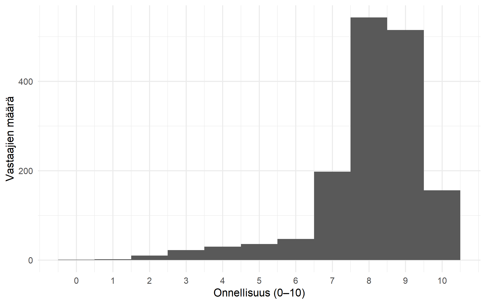
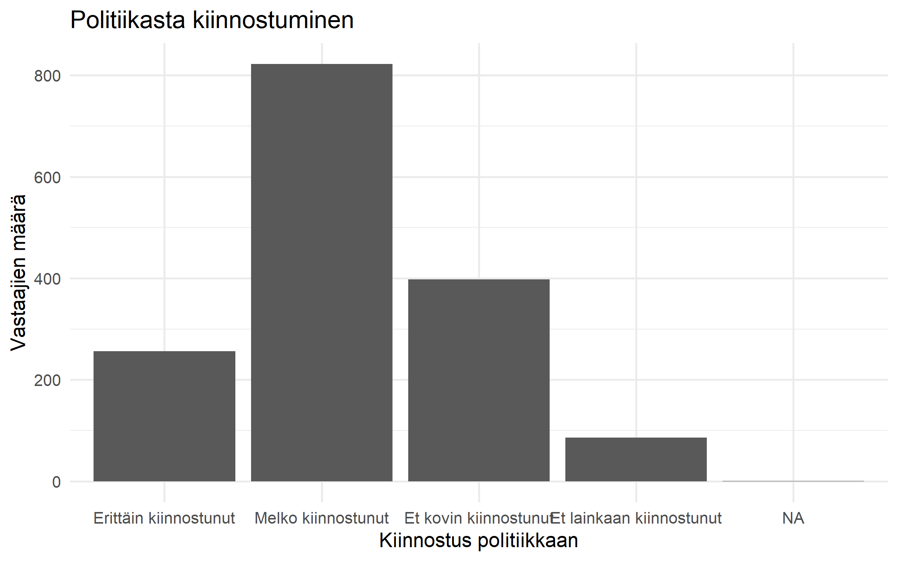
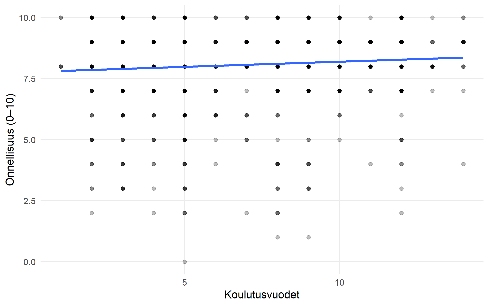
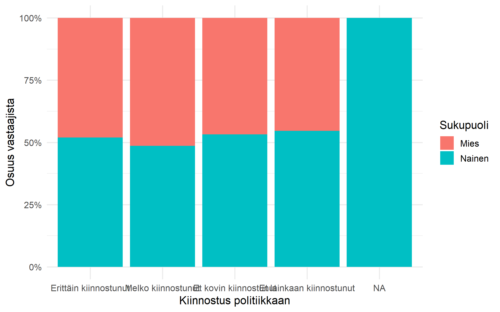

ggplot(ESS2023, aes(x = C1)) +
geom_histogram() +
labs(x = "Onnellisuus", y = "Vastaajien määrä")Osa 3: Harjoitustehtävät
Tee jokainen kuvio itse ennen kuin avaat malliratkaisun. Kiinnitä huomiota siihen, mitä kuvio tekee näkyväksi ja mitä se jättää piiloon. Tehtävissä käytetään ggplot2:n perusteita, pylväskuvioita, sirontakuvioita ja usean muuttujan kuvioita.
Jakaumat
Onnellisuuden histogrammi
Piirrä muuttujan C1 histogrammi. Nimeä akselit ja tarkista, miltä jakauma näyttää. ESS:n asteikolla arvot ovat 0–10.
HuomautusMalliratkaisu
ggplot(ESS2023, aes(x = C1)) +
geom_histogram(binwidth = 1, boundary = -0.5) +
scale_x_continuous(breaks = 0:10) +
labs(x = "Onnellisuus (0–10)", y = "Vastaajien määrä")
Tarkista, että pylväät vastaavat yksittäisiä asteikon arvoja ja akseli kattaa arvot 0–10. Pohdi, painottuvatko vastaukset asteikon ala- vai yläpäähän.
Politiikasta kiinnostuneiden vastaukset
Piirrä muuttujan B1 pylväskuvio. Muunna se ensin luokitelluksi, jotta akselilla näkyvät vastausluokat numeroarvojen sijaan. Lisää selkeä otsikko ja akselien nimet.
ESS2023 <- ESS2023 |>
mutate(Politiikkakiinnostus = as_factor(B1))
ggplot(ESS2023, aes(x = Politiikkakiinnostus)) +
geom_bar() +
...
HuomautusMalliratkaisu
ESS2023 <- ESS2023 |>
mutate(Politiikkakiinnostus = as_factor(B1))
ggplot(ESS2023, aes(x = Politiikkakiinnostus)) +
geom_bar() +
labs(
x = "Kiinnostus politiikkaan",
y = "Vastaajien määrä",
title = "Politiikasta kiinnostuminen"
)
Pylväiden korkeuksien pitäisi vastata count(Politiikkakiinnostus)-taulukon määriä. Puuttuva vastaus ei näy omana pylväänään.
Yhteys kahden muuttujan välillä
Koulutusaste ja onnellisuus
Muodosta F15-muuttujasta kolme koulutusastetta yhdistämällä alkuperäiset luokat 1–3, 4–8 ja 9–14. Arvo 5555 tarkoittaa “Jokin muu” -vastausta, joten jätä se pois. Piirrä onnellisuuden (C1) jakauma koulutusasteittain laatikkokuviona ja nimeä akselit.
ESS2023 <- ESS2023 |>
mutate(Koulutusaste = ...)
ggplot(ESS2023, aes(x = Koulutusaste, y = C1)) +
geom_boxplot() +
labs(x = "Koulutusaste", y = "Onnellisuus (0–10)")
HuomautusMalliratkaisu
ESS2023 <- ESS2023 |>
mutate(
Koulutusaste = cut(
na_if(as.numeric(F15), 5555),
breaks = c(0, 3, 8, Inf),
labels = c("Peruskoulu tai alempi", "Keskiaste", "Korkea-aste")
)
)
ggplot(ESS2023, aes(x = Koulutusaste, y = C1)) +
geom_boxplot() +
labs(x = "Koulutusaste", y = "Onnellisuus (0–10)")
Laatikon keskiviiva kuvaa mediaania ja laatikko keskimmäistä puolikasta havainnoista. Ryhmien jakaumia vertaillessa huomaa sekä mediaanien erot että hajonnan; kuvio ei yksin osoita syy-seuraussuhdetta.
Politiikkakiinnostus sukupuolittain
Piirrä 100 prosentin pinottu pylväskuvio politiikkakiinnostuksesta sukupuoliryhmittäin. Käytä x-akselilla kiinnostuksen luokkaa ja täyttövärinä sukupuolta. Mitä vertailu näyttää paremmin kuin vastaajamäärien kuvio?
ESS2023 <- ESS2023 |>
mutate(
Politiikkakiinnostus = as_factor(B1),
Sukupuoli = as_factor(Sukupuoli)
)
ggplot(ESS2023, aes(x = Politiikkakiinnostus, fill = Sukupuoli)) +
geom_bar(position = "fill") +
...
HuomautusMalliratkaisu
ESS2023 <- ESS2023 |>
mutate(
Politiikkakiinnostus = as_factor(B1),
Sukupuoli = as_factor(Sukupuoli)
)
ggplot(ESS2023, aes(x = Politiikkakiinnostus, fill = Sukupuoli)) +
geom_bar(position = "fill", na.rm = TRUE) +
scale_y_continuous(labels = scales::label_percent()) +
labs(
x = "Kiinnostus politiikkaan",
y = "Osuus vastaajista",
fill = "Sukupuoli"
)
Jokainen pylväs ulottuu 100 prosenttiin. Näin sukupuoliryhmien suhteellisia osuuksia voi verrata kiinnostusluokan sisällä, vaikka ryhmien vastaajamäärät eroaisivat.